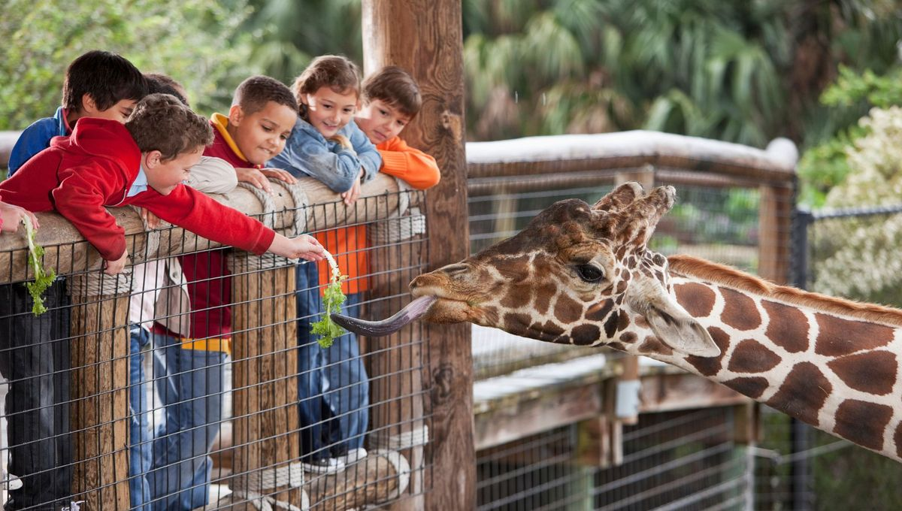

Découvrir la diversité du vivant en pénétrant dans le monde animal est une expérience inoubliable. La fondation d'Arcadia remonte à 1980, avec pour seule ambition le respect de la biodiversité. Mettre en place un lieu de rencontre entre les humains et les animaux, en favorisant le respect et la bienveillance. Depuis notre fondation, nous nous efforçons de préserver la biodiversité en mettant en place des programmes de conservation et de recherche. Arcadia se donne pour mission de protéger et de veiller au bien-être des animaux qui nous sont confiés.
